Every season, Lakmē Fashion Week in partnership with FDCI turns into two shows at once — the one on the runway, and the quieter, more honest one happening backstage in the hour before. This is a walk through both: the pinning and last looks behind SUPIMA presents AFEW by Rahul Mishra, the quiet revival of khadi under Navdhara, a circular denim story from R-ELAN, and the showstopper gowns that closed the night.
SUPIMA Presents AFEW by Rahul Mishra: Stripes, Sheers & Silver
Backstage, ahead of SUPIMA presents AFEW by Rahul Mishra, the palette was disciplined — ivory, charcoal pinstripe, and the odd flash of jewel tone under sheer tulle. Tailoring did most of the talking: pinstriped waistcoats and trousers were finished with delicate dragonfly appliqués, a motif that recurred across the collection like a signature stitched into every hem.
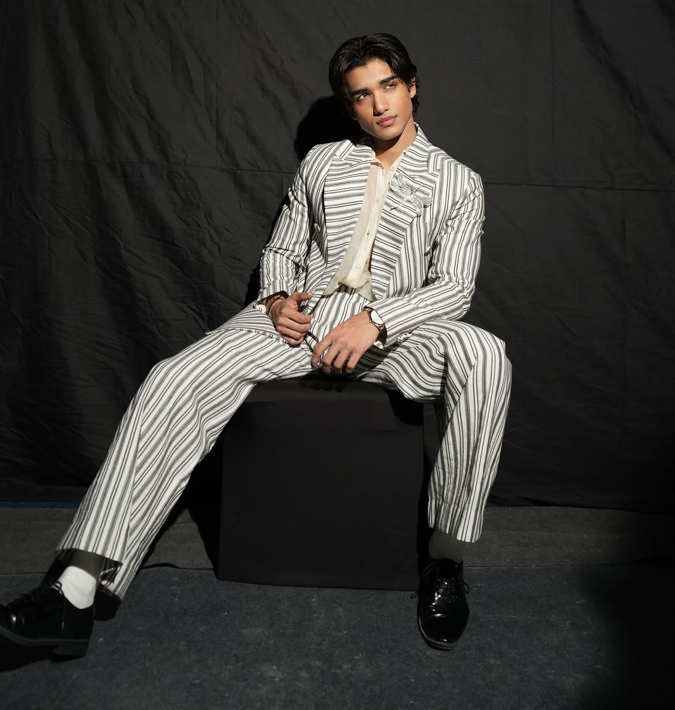
Pinstripe, undone: an open shirt and loosened tailoring, styled for the calm before the walk.
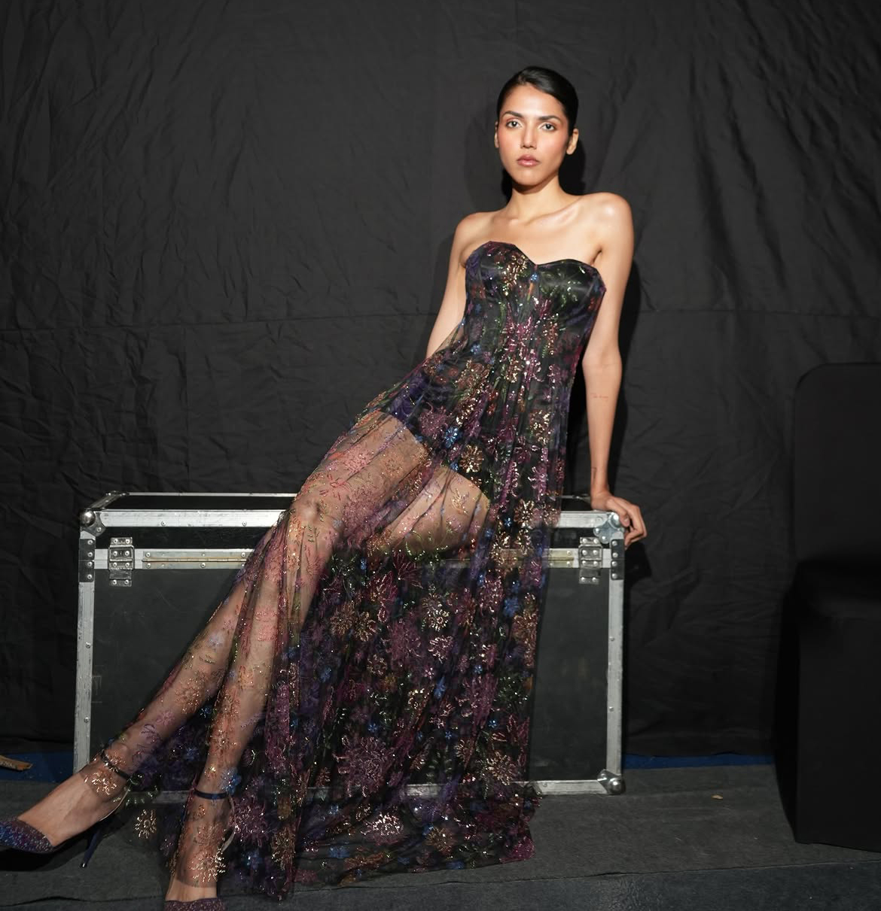
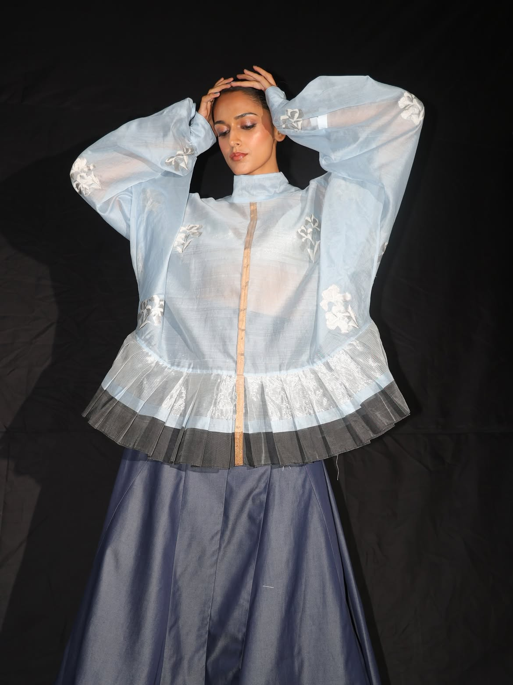
Image credits: @fdciofficial
The gowns leaned into transparency without ever losing structure — corsetry sat under floral, beaded tulle that caught the backstage light long before it caught the runway's. Paired against the sharpness of the pinstripe suiting, the effect backstage was already telling the story the show would go on to make on the runway: menswear tailoring and eveningwear softness, styled as if they'd always belonged in the same room.
The recurring dragonfly motif — on lapels, cuffs, and even as a standalone brooch — read less like an accessory and more like a thread tying the entire lineup together, menswear and eveningwear alike.
Navy, Denim & the Quiet Palette Backstage
Not every backstage moment was black and white. A trio of looks — a pinstriped blazer over a sheer plaid skirt, a bralette layered under an unbuttoned jacket, and a crystal-dusted denim wrap dress — showed the collection's other register: a moody, indigo-leaning palette that felt closer to eveningwear than daywear.
Denim, dressed up: a crystal-scattered wrap silhouette in indigo denim, styled with a dramatic gathered sleeve.
Image credits: @fdciofficial
What stood out was the restraint — crystal embellishment used sparingly enough that it read as texture rather than sparkle, letting the denim itself stay the star of the look.
Khadi India Presents Navdhara: An FDCI Curation
Navdhara — Khadi India's FDCI curation — set out to prove that khadi doesn't have to stay in the archive of "ethnic wear." Backstage, the fabric turned up in sheer organza-weight blouses with floral jaal embroidery and pleated peplum hems, styled over structured skirts in a way that felt closer to contemporary ready-to-wear than heritage textile.
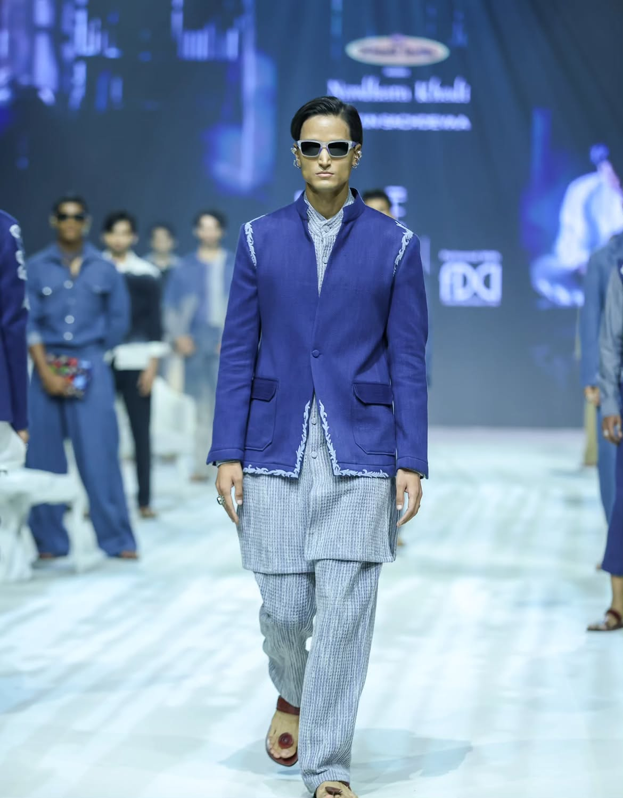
Pawan Sachdeva — sheer khadi, pleated and peplumed, backstage.
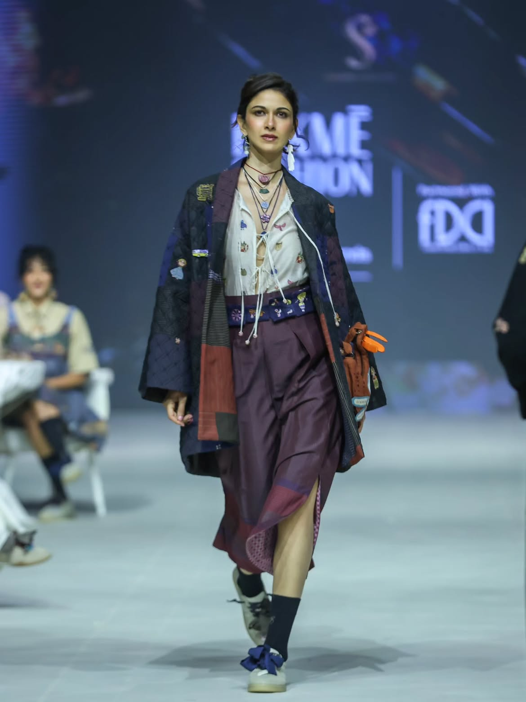
Shruti Sancheti — ivory khadi drapes with a gold-bordered dupatta.
Image credits: @fdciofficial
On the runway, Pawan Sachdeva's take arrived in indigo — a hand-embroidered bandhgala jacket over a checked kurta, styled with striped trousers and finished, deliberately, with a plain leather sandal instead of anything more formal. Shruti Sancheti's runway looks went further into patchwork: a quilted, embroidered kimono-style coat over a wrapped maroon skirt, with a checkerboard jacket elsewhere in the lineup carrying pockets full of hand-stitched charms.
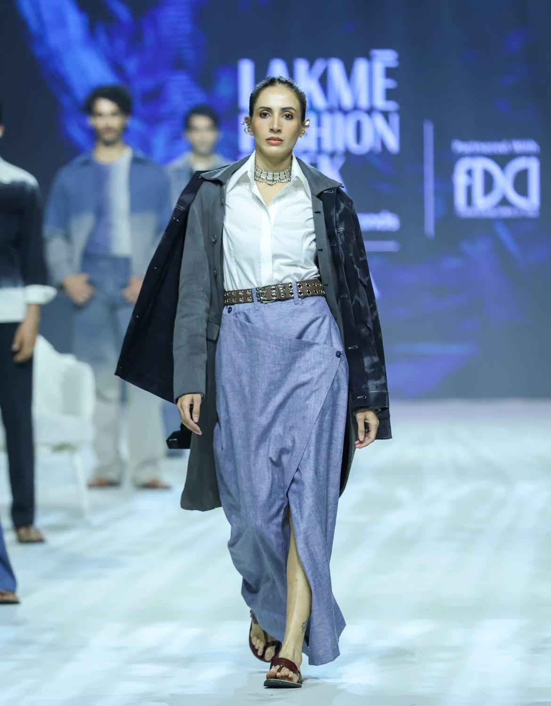
Indigo bandhgala: hand-embroidered edging over a checked khadi kurta.
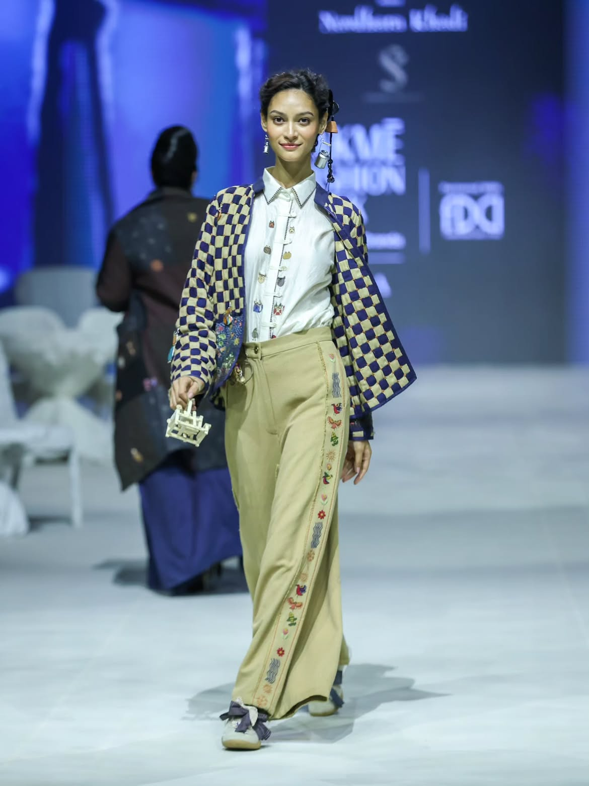
Image credits: @fdciofficial
- Sheer khadi blouses were layered over structured skirts, not traditional bottoms — a deliberate genre-blend
- Embroidery stayed hand-worked and irregular, keeping the artisanal quality visible rather than smoothed over
- Footwear across the segment was kept flat and plain, so the textile work stayed the focus
R-ELAN Circular Design Challenge Presents CRCLE
Staged in partnership with the UN in India, the R-ELAN Circular Design Challenge's CRCLE segment made its case for sustainable fashion without slipping into anything that looked like a compromise. A grey trench worn open over a crisp white shirt and a wrap-front chambray skirt, finished with a statement belt and simple leather sandals, looked like something pulled straight from an off-duty editor's wardrobe rather than a "conscious fashion" showcase.
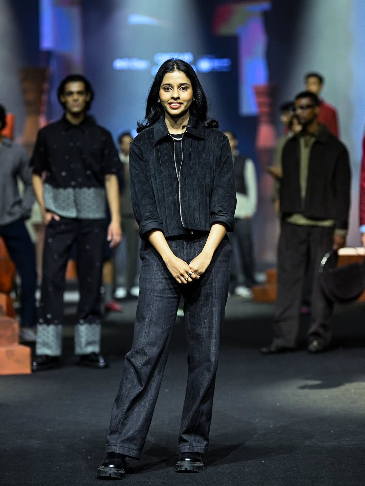
Circular by design: tailored layers in chambray and grey, styled for everyday wear.
Image credits: @fdciofficial
"The strongest argument circular design can make on a runway isn't a slogan — it's a silhouette you'd actually want to wear again."
That was the quiet success of CRCLE: nothing about the styling announced sustainability outright. The clothes were simply well-cut, wearable, and finished with the kind of understated jewelry — a layered choker, small hoop earrings — that made the whole look feel considered rather than performative.
Showstoppers: The Gowns That Closed the Night
Every Lakmē Fashion Week evening builds to its showstopper walk, and this season's closing looks leaned hard into drama — jewel tones, sequins, and silhouettes engineered to move under stage light.
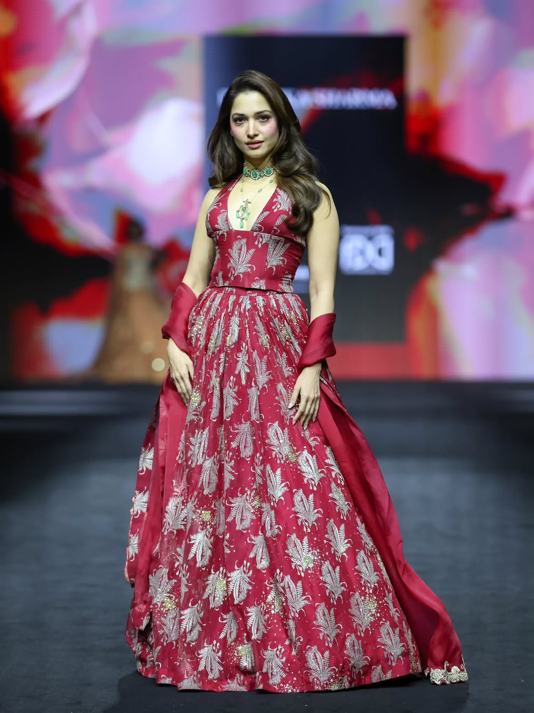
Tamannaah Bhatia
A deep red ball gown in metallic leaf-print organza, paired with emerald and diamond jewelry for maximum old-Hollywood drama.
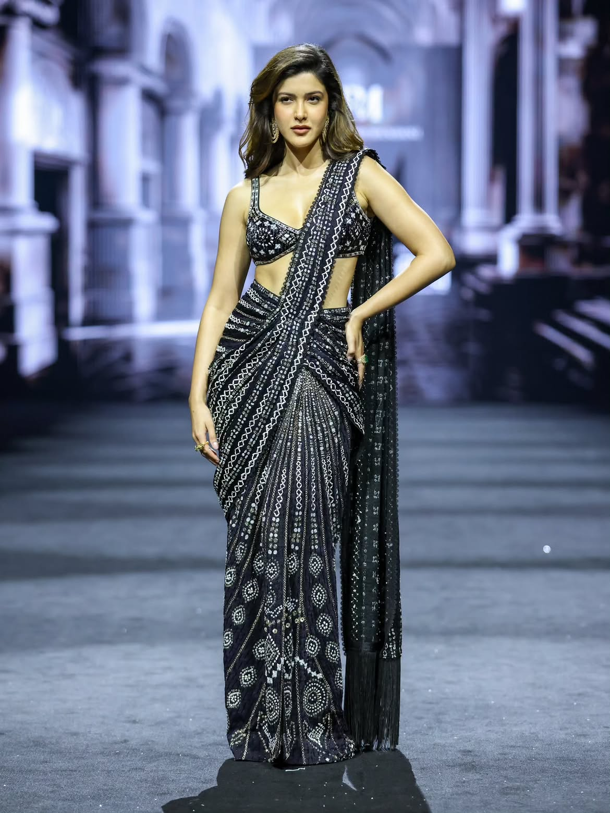
Shanaya Kapoor
A pre-draped saree gown in black, threaded through with silver mirror-work and a dramatic fringed pallu.
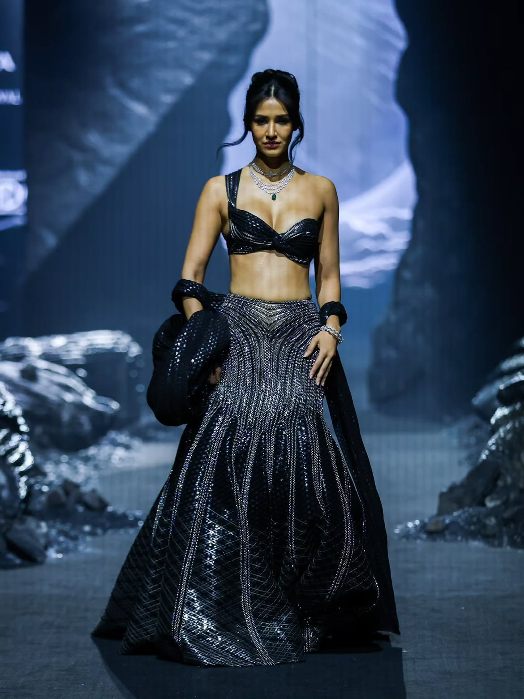
Disha Patani
A metallic, engineered-pleat lehenga in gunmetal sequins, styled with layered diamond necklaces from the jewellery collaboration.
Image credits: @fdciofficial
Between the three, the showstopper segment covered nearly every register of Indian eveningwear — the ball gown, the draped saree, and the structured lehenga — each anchored by a jewelry story rather than embellishment on the garment alone.
Ananya Panday Closes SUPIMA Presents AFEW by Rahul Mishra
The Rahul Mishra show's finale look, worn by Ananya Panday, brought the collection's dragonfly motif back one last time — this time embroidered across a boxy white blazer and matching pleated mini skirt trimmed in navy, set against a runway staged like an oversized cotton field, complete with an outsized ladybug installation overhead.
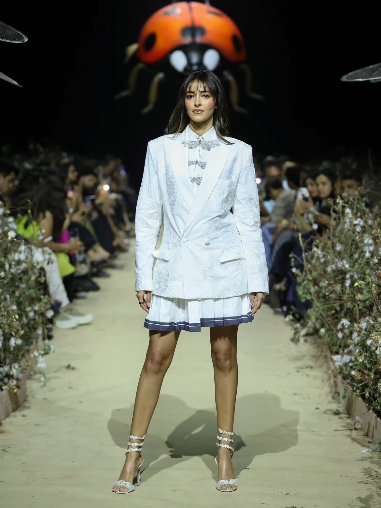
Finale walk: dragonfly embroidery on tailored white, staged among an oversized cotton-field set.
Image credits: @fdciofficial
The set design did as much work as the clothes — cotton bolls lining the runway edge, tied back to SUPIMA's cotton-forward brief, while the insect motifs from backstage were blown up into full installations, turning the finale walk into the collection's thesis statement in miniature.
Backstage with Aisha Rao: Lace, Netting & Beadwork
Away from the main stages, Aisha Rao's backstage told its own story — heavy metallic lace worked into oversized jackets, fine netting cut into cropped tops and skirts, and beadwork so dense it read as embroidery from a distance.
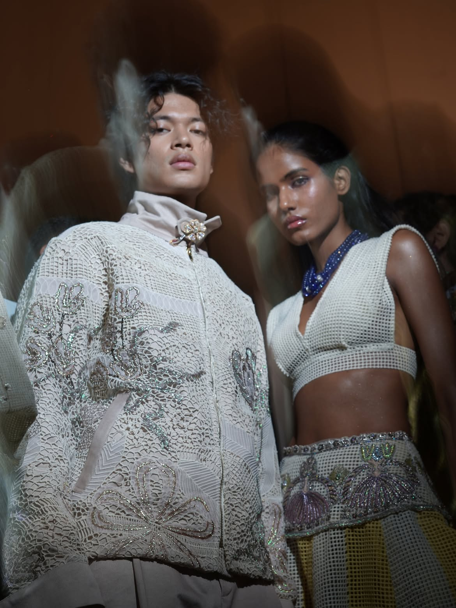
Metallic lace and fine netting, paired backstage.
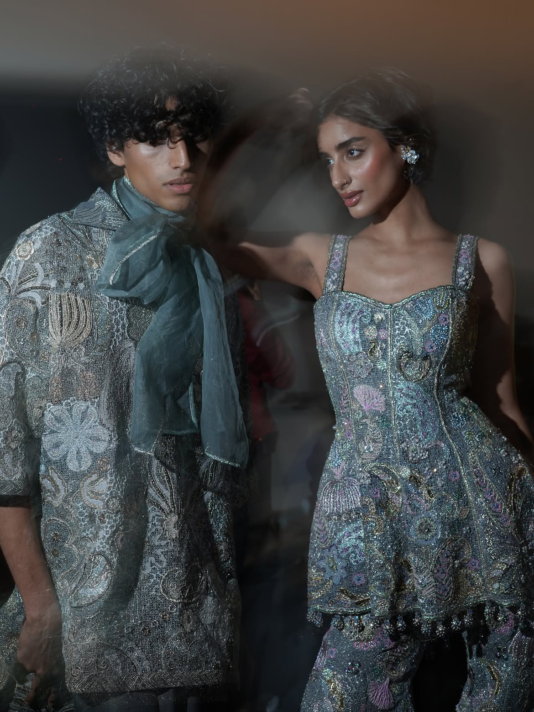
Head-to-toe beadwork, finished with a soft organza scarf.
Image credits: @fdciofficial
What tied the two moments together was texture over color — nearly everything backstage stayed in a tonal silver-and-cream range, letting lace density, bead placement, and net weight do the work that print or color usually would.
The Threads Running Through This Season
Pulled apart designer by designer, this season could look scattered — pinstripes here, khadi there, sequins and circular denim somewhere else entirely. Seen backstage, in the hour before each show, a few threads kept reappearing.
- Heritage textiles — khadi especially — styled as contemporary ready-to-wear rather than archival "ethnic wear"
- Recurring embroidered motifs (dragonflies, insects, botanicals) used as a signature across both menswear and eveningwear
- Sustainability stories told through wearability first, with the "conscious" label kept out of the styling itself
- Showstopper eveningwear leaning into maximalist jewelry pairings rather than garment embellishment alone
Backstage is where a collection's real intentions show — before the lighting, the music, and the front row change how a look reads. This season, it was the quiet consistency backstage, more than any single showstopper gown, that made the story.
"The best fashion week coverage isn't the gown at the end of the runway — it's the ten minutes before it walks out."